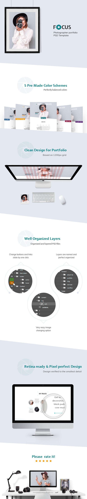
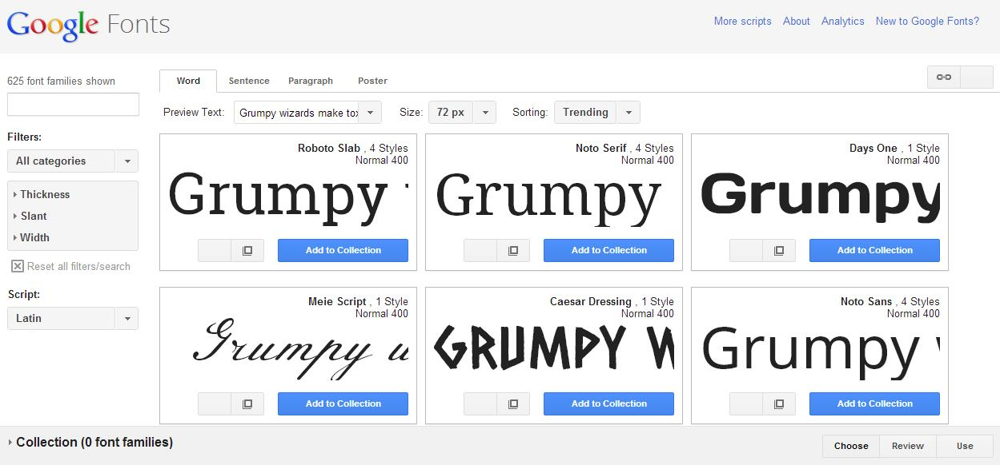
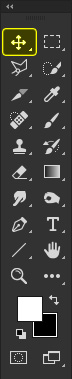
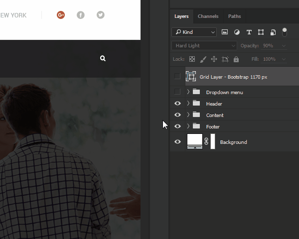
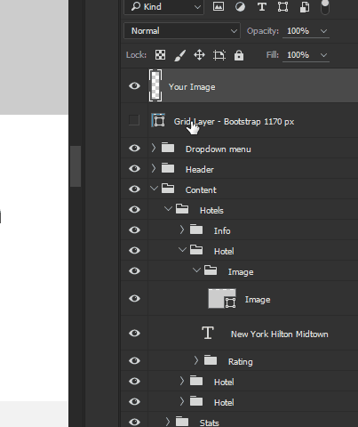
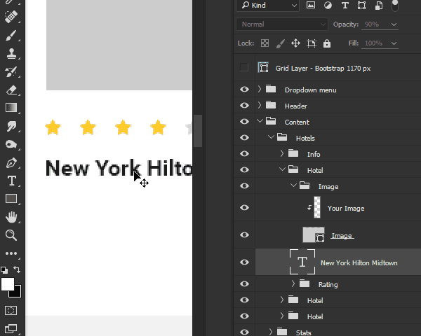

Thank you for purchasing this theme. For further questions please contact us through ThemeForest or leave an comment. We'd love respond to you!
Focus is a creative PSD template for photographers, musicians, creative agencies, trainers, hairdresser, artisans, handmaders, designer, film makers, freelancer, artists and many more individual who want to showcase his/her work.
The template is fully editable which allows you to build new home pages, subpages, and create different layouts. You can easily replace any picture by your own one in just a few clicks.

All images are just used for Preview Purpose Only. They are not part of the template and NOT included in the final purchase files.

More than 600 google fonts to choose from. A web with web fonts is more beautiful, readable, accessible and open. All of the fonts are Open Source. This means that you are free to share your favorites with friends and colleagues. You can even customize them for your own use, or collaborate with the original designer to improve them. And you can use them in every way you want, privately or commercially — in print, on your computer, or in your websites.
You can use Move Tool(V) for fast layer selection

Click on section to select. Click or arrow to expand section. Click on on the eye to hide / show section

Drop your image to page, drag your picture above the later with placeholders(usually they are named background, bg, image, img), right click on your image layer -> Create Clipping Mask or use shortcuts Control + Alt + G for Windows and Command + Option + G for Mac

Select text layer, use Type Tool(T) to edit the text
